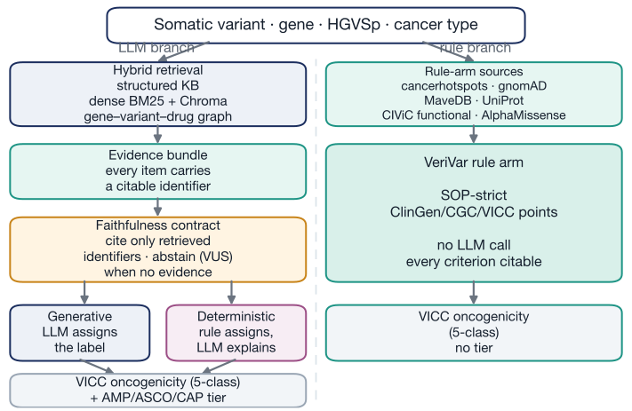
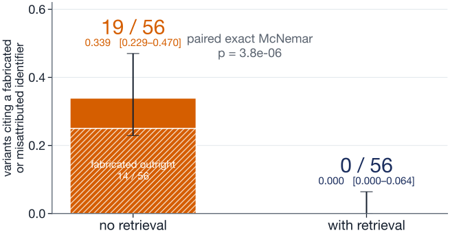
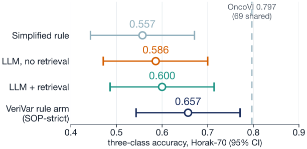
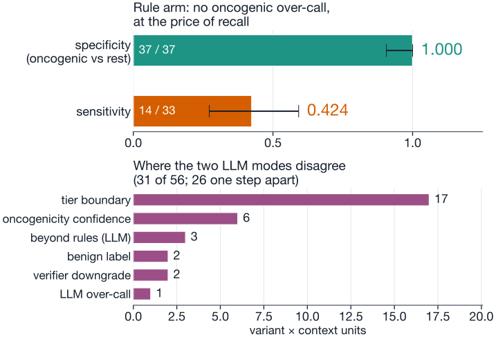
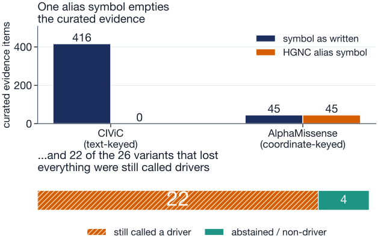

1 The problem
Large language models read the literature fluently and write structured reports, which is exactly what somatic variant interpretation needs. Two failure modes block clinical use.
- They invent sources. A confident paragraph can rest on a PubMed identifier that belongs to an unrelated paper, or to no paper at all.
- They answer from memory. A well-known variant can be classified from what the model absorbed in training rather than from evidence anyone can check.
Both make the output unauditable. A reviewer cannot tell a sound call from a lucky one, which is the property a molecular tumour board actually needs.
2 What VeriVar does
Every variant is classified on two international standards, ClinGen/CGC/VICC oncogenicity and the AMP/ASCO/CAP clinical tier, under a contract enforced in the retrieval and gating layers rather than in the model's weights.
- Hybrid retrieval builds an evidence bundle in which every item has a citable identifier.
- The model may cite only identifiers from that bundle.
- With no variant-specific evidence it must return VUS instead of guessing.
- A separate deterministic rule arm scores the guideline's own criteria with no LLM call.

3 How it was evaluated
5 cancers, 27-gene panel
Horak 2022 gold standard
independent holdout
Evidence comes from CIViC, DGIdb, AlphaMissense and ClinicalTrials.gov as committed offline snapshots, so the whole evaluation re-runs without network access. Leakage was controlled two ways: a temporal sweep that rolls the retrieval corpus back to pre-2012 literature, and a leave-own-evidence-out run that deletes each variant's own curated evidence before classifying it.
Three things are then measured and reported separately, because they fail in different ways: whether a cited record exists in the retrieved evidence, whether it supports the sentence citing it, and whether the call is correct against the expert standard.
4 Citations become checkable
Both arms are scored by one citation taxonomy, applied identically. The measurement is taken before the gate removes anything, so it is a behaviour, not a guarantee.

5 Accuracy does not move

6 Two kinds of caution

Published engines sit the other way round: OncoVI reaches 0.797 accuracy on the 69 shared variants by accepting over-calls. Neither difference is significant (p = 0.087). Which error you prefer is a clinical choice, not a technical one.
7 Where the guarantee breaks
The contract promises that citations exist. It does not promise the system recognised the variant you asked about. Rewriting the same variant with an older gene symbol tests that.

Repeatability was measured, not assumed: at temperature 0 the same prompt disagrees with itself on 17.3% of compared fields, which is the floor any claim of change has to clear.
Open and reproducible
- Data
- public only: TCGA via cBioPortal, CIViC, DGIdb, AlphaMissense, ClinVar, ClinicalTrials.gov
- Runs
- offline from committed snapshots; model outputs cached per variant
- Checks
- 392 tests, plus a gate that recomputes every number in the manuscript and resolves every DOI
- Code
github.com/kakyungkim/VeriVar
Who this is for
- Researchers
- a draft interpretation whose every sentence can be traced to a record, and an abstention when the evidence is not there
- Industry R&D
- a worked pattern for putting a citation contract and an audit gate around a hosted model, including the change-control checks a model swap forces
- Students
- the whole pipeline, data and evaluation are public and run on a laptop without an API key
What we would fix next
- Normalise
- resolve gene symbols and HGVS spellings before retrieval, so an alias cannot silently empty the evidence
- Require
- an evidence-sufficiency condition on driver calls, not a citation condition alone
- Check
- that the cited record describes the residue actually asked about
- Gate
- citations on entailment, not only on membership of the bundle